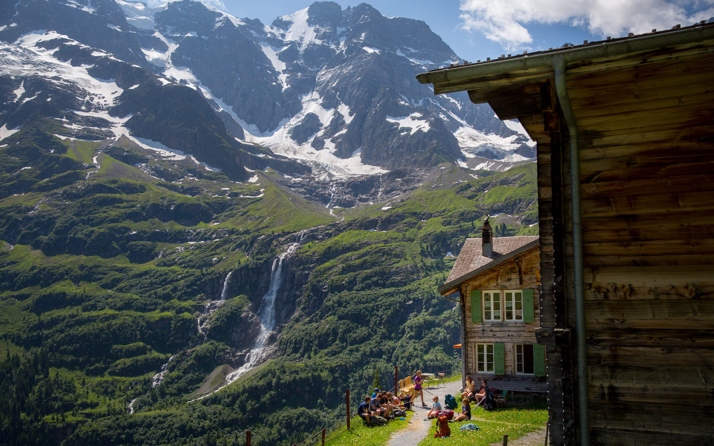
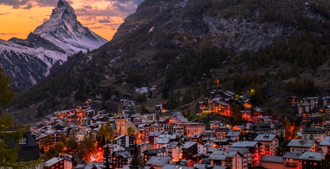

Switzerland (Swiss Alps)

The Swiss Alps cover 64% of Switzerland’s surface, while Switzerland only covers about 15% of the Alps’ surface area. Regardless, Switzerland is the country that is most commonly associated with the Alps. The highest point in these Alps accessible by cable car is the Matterhorn.
However, the highest summit of these Alps is the Monte Rosa, located on the Swiss-Italian border, but the highest mountain is Dom, entirely within Switzerland. The most popular activity that takes place in the Swiss Alps is hiking. Almost 23,000 kilometers of hiking trails are accessible to the public in Switzerland’s mountainous areas.
Photo Gallery

Located at the base of the majestic Matterhorn, the beauty and bounty of Zermatt are rivaled by few. The slopes serve up impeccable skiing conditions 365 days a year. And it’s one of only two locations in the world to boast such a statistic. Its world-class lift system, endless terrain, and activities off the slopes are just a few reasons many consider Zermatt the best ski destination in Europe, possibly the world.
The Swiss Summer shouldn’t be slept on. There are many activities to take part in other than skiing such as hiking and wine tasting. The Alpine waters are also good for swimming this time of year.
 South of Bern and Luzern, and east of Lake Geneva, lies the grand Alpine heart of Switzerland, a massively impressive region of classic Swiss scenery – high peaks, sheer valleys and cool lakes – that makes for great summer hiking and world-class winter sports.
"There are many beautiful towns in the Swiss Alps. The photographer started in Interlachen and ended in Lauterbrunnen, a town known for its hiking trails in the alps."
South of Bern and Luzern, and east of Lake Geneva, lies the grand Alpine heart of Switzerland, a massively impressive region of classic Swiss scenery – high peaks, sheer valleys and cool lakes – that makes for great summer hiking and world-class winter sports.
"There are many beautiful towns in the Swiss Alps. The photographer started in Interlachen and ended in Lauterbrunnen, a town known for its hiking trails in the alps."
 "You’ll get great views on alpine railways. Switzerland’s Gotthard tunnel, connecting rail traffic from Milan to Zurich, is temporarily closed. Trains are being rerouted to the “Panorama route” offering much better views of the Swiss Alps for an hour longer."
"You’ll get great views on alpine railways. Switzerland’s Gotthard tunnel, connecting rail traffic from Milan to Zurich, is temporarily closed. Trains are being rerouted to the “Panorama route” offering much better views of the Swiss Alps for an hour longer."